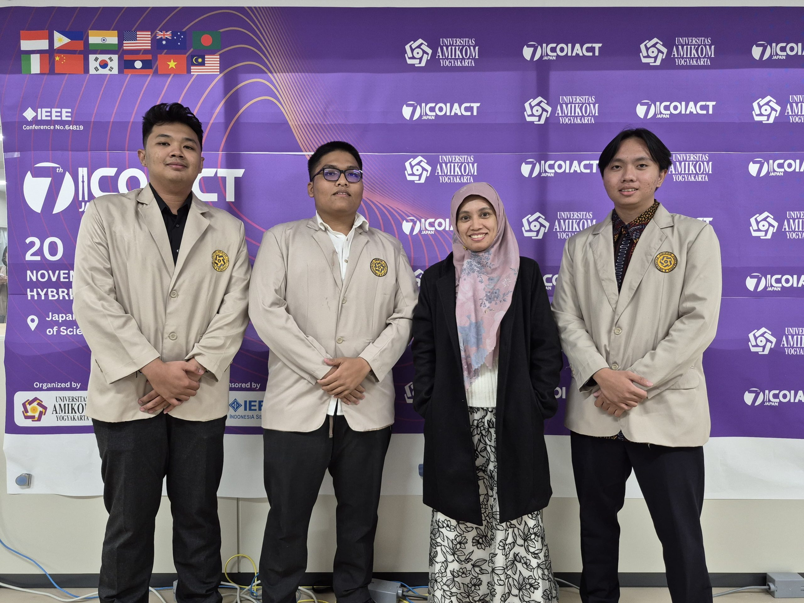
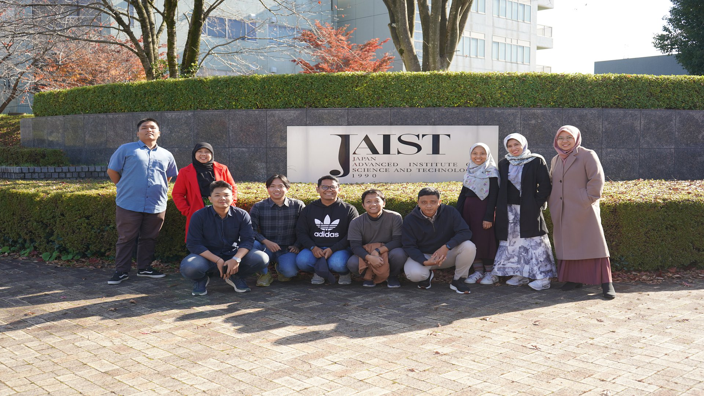
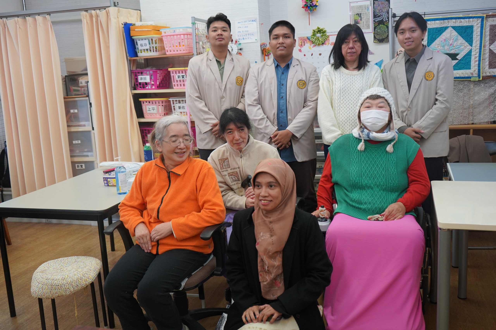

Halo, Saya
Muhammad Antariksa
Lulusan Informatika | Machine Learning & Software Engineer
Lulusan Informatika yang berfokus pada pengembangan sistem cerdas, Machine Learning, dan rekayasa perangkat lunak. Suka membangun aplikasi web interaktif yang menyelesaikan masalah nyata menggunakan data dan teknologi modern.
Teknologi & Keahlian Utama
Ready for Work
AI / ML & Software Eng.
Muhammad Antariksa
S1 Teknik Informatika
Kenapa Memilih Saya?
Memiliki kombinasi analitis data komputasi machine learning serta kemampuan rekayasa web frontend/backend yang siap diimplementasikan langsung pada ekosistem industri.
Menghubungkan Algoritma Machine Learning dengan Pengalaman Pengguna Berdampak.
Sebagai lulusan Informatika, saya berdedikasi membangun aplikasi cerdas berkinerja tinggi. Fokus utama saya mencakup pembuatan model machine learning yang akurat, pengolahan data time series & kesehatan, serta pengemasan model ke dalam antarmuka web interaktif yang siap diakses pengguna maupun stakeholder bisnis.
Pengalaman di Jepang
Dokumentasi keterlibatan dalam delegasi akademik internasional, pendampingan MoU Universitas, serta pengabdian masyarakat lintas budaya di Jepang.
Pendampingan MoU & Technical Support Konferensi Internasional di Jepang
Sebagai perwakilan mahasiswa dari IEEE Student Branch (ASB), saya dan 2 teman saya diberangkatkan untuk membantu jalannya acara dan mendampingi para dosen Universitas Amikom yang juga memiliki agenda penandatanganan MoU dengan beberapa universitas ternama di Jepang. Pengalaman ini tidak hanya memperluas wawasan kami, tetapi juga memberikan pelajaran berharga tentang profesionalisme dalam acara berskala internasional.
Tim kami memiliki tanggung jawab yang berbeda-beda. Ada yang bertugas mengelola live streaming melalui kanal YouTube amikomjogja, mendokumentasikan acara menggunakan kamera dan gimbal, serta mendesain materi visual seperti poster, sertifikat, dan banner. Kami merasa bangga dapat menjalankan tugas kami dengan lancar, mulai dari memastikan kelancaran live streaming, dokumentasi, hingga mendukung kebutuhan teknis lainnya.
Tanggung Jawab & Kontribusi:



Program Pengabdian Masyarakat: Membawa Budaya Indonesia untuk Lansia & Disabilitas di Jepang
Sebagai bagian dari rangkaian kunjungan akademik ke Jepang yaitu program pengabdian masyarakat, kami mengunjungi tempat lansia difabel di Kanazawa tepatnya di Lembaga AJU (一般社団法人あじゅ), yaitu Sebuah organisasi nirlaba yang berfokus pada pengembangan dan dukungan untuk lansia penyandang disabilitas.
Agenda ini mengusung tema “Membawa Kebudayaan Indonesia kepada Lansia dan Disabilitas Jepang”, dan ditujukan untuk berbagi inspirasi sekaligus memperkenalkan budaya Indonesia kepada warga lansia dan difabel setempat. Di sana, saya dan team memperkenalkan minuman dan makanan khas Indonesia, seperti secang dan bakpia. Kami juga berkesempatan untuk membeli hasil kerajinan tangan yang dibuat oleh para lansia tersebut.
Sorotan Kegiatan & Dampak Sosial:
Proyek Unggulan
Berikut adalah showcase karya aplikasi web berbasis Machine Learning yang telah dideploy dan siap diuji secara langsung oleh Tech HR.

Stunting Prediction App
Platform web interaktif yang dirancang untuk membantu memprediksi, mendeteksi secara dini, serta menganalisis risiko stunting pada anak berdasarkan indikator kesehatan antropometri menggunakan model komputasi yang akurat.

Analisis Prediksi Harga Emas
Sistem analisis dan peramalan berbasis web untuk memprediksi tren pergerakan harga komoditas emas. Menggunakan pendekatan machine learning / time series forecasting untuk membantu pengambilan keputusan investasi atau konversi aset.
Tertarik Membangun Proyek Bersama?
Saya selalu terbuka untuk berdiskusi tentang peluang kerja, rekrutmen tim engineering, atau proyek Machine Learning dan Software Development.